Menos do mesmo.
Sistema de design · provisório até a More aprovar
![[Espécime da fonte]](brand/specimen/especime.png){kind=link}
Nada aqui é aleatório. Cada cor, medida e palavra é uma decisão, e as decisões formam um sistema.
“Não há aleatoriedade, apenas decisões conscientes. Tudo foi pensado como parte de um sistema maior.”— Fred Péclat, Casa Vogue, 04.2026
Um sistema funciona como uma orquestra. Um músico desafinado se ouve mais que a música inteira.
Por isso cada regra tem uma checagem automática. Ela confere a peça antes de sair: cor, medida, fonte, palavra. Nenhum instrumento sai do tom.
Os valores foram medidos no site mymore.design e no Instagram @more.mymore, em 15.10. Nada foi inventado. O que ainda é dúvida está marcado como pendente.
Para quem cria, esta página é o guia. A IA lê os mesmos arquivos e segue as mesmas regras.
Nove ideias que seguram o resto
O fundo é off-white quente, como papel de revista. Transparência só nas barras flutuantes.
A interface é quase sem cor. A cor vem da madeira, do bouclê, do vidro fundido.
Nenhum canto arredondado. Foto, barra e botão têm canto vivo.
Muoto diz os nomes e os preços. Muoto Mono fala com a interface, entre colchetes.
Madeira maciça em seções grossas. Peças com nome de gente. Acabamentos com nome de lugar e de fruta: Jambo, Igaratá, Guaraná, Jamaica.
Navegação e ação ficam em barras de 35 px no pé da tela. O resto é das fotos.
Pátina, mancha de uso e madeira que escureceu não se retocam. Cada madeira diz como envelhece. O ipê escurece com a luz. É para isso.
“Vai sujar, eu vou assumir isso.”
— Fred Péclat, Atelier Peclat, 06.2025
regra R-TIME-01 · proposta
A página tem ritmo: peça inteira, detalhe, vazio. Depois de dois blocos densos vem um respiro. Só off-white e uma linha.
“A minha mão desenha o maciço, mas a intenção é criar um espaço vazio.”
— Fred Péclat, Atelier Peclat
regra R-LAYOUT-04 · proposta · medida space.vazio
Toda peça mostra um detalhe de execução: encaixe, quina, solda. E diz quem fez. Até a More confirmar os nomes, pelo ofício: a marcenaria, a serralharia.
“Para fazer sentido a gente fazer móvel, tem que estar bem feito. É premissa.”
— Fred Péclat, Em Casa, 09.2025
regra R-CRAFT-01 · proposta
O que a More acha
Uma peça não precisa combinar. Não foi feita para combinar com o sofá. E isso é bom.
Material antes de adjetivo. Madeira maciça, vidro fundido, alumínio naval, ditos pelo nome.
Contra o móvel genérico de projeto. A peça se sustenta sozinha numa sala.
Linguagem, não estilo. O móvel nasce do espaço: proporção, material, escala.
“Estilo te encaixota. Existe uma linguagem.”
— Fred Péclat, Em Casa, 09.2025
Voz
A More fala em dois registros. A linha seca afirma. A pergunta abre a conversa. Português primeiro. Sem exclamação, sem emoji, sem hashtag.
Mesa de jantar Naz. Não é quadrada, só parece.
Banco João. Precisa da sua Maria.
Maçaneta Constantin. A primeira impressão é na mão.
Nome da peça, ponto. Uma linha que discorda do óbvio. Depois o material, se precisar.Para qual sala é? Conte da luz que ela tem.
A janela dá para onde?
Quem senta ali, e a que horas?
A primeira mensagem pergunta pela sala, pela luz e por quem mora. Nunca pelo preço. A ação é [Conversar].“O projetar é uma conversa de perguntas e respostas. Cada decisão é uma resposta.”— Fred Péclat, Em Casa, 09.2025
Móveis feitos com carinho para o seu lar.
Design único para todos os estilos.
Purity of lines and natural beauty.
Olá, como podemos ajudar?
Qual é o seu orçamento?
Pedir orçamento
Nomes
Um nome por peça. Igual no site, no Instagram, na etiqueta e no arquivo. Tipo em minúscula, depois o nome: Mesa de centro Cildo, Cadeira 556-A, Luminária Ngoni, Poltrona Leticia.
Hoje a mesma peça tem nomes diferentes. Mesa Cildo ou Mesa de centro Cildo. Cadeira 556 ou 556-A. Torre de luz ou Luminária Ngoni. Leticia ou Letícia.
A marca em dois tamanhos
M ou XL nas peças. S só na barra do menu do site. Hoje ela tem 60 px, abaixo do mínimo do guia de uso. O mínimo é 120 px na tela e 18 mm no papel (guia, p. 5).
Preto, branco ou off-white. Preto sobre amarelo-igaratá. Branco sobre vermelho-jambo, verde-jamaica e berinjela. Nunca contornada, espelhada ou com padrão por cima.
A marca é sempre o desenho oficial do brand book, de Manoela Moura e Anna's, 2025. A cor vem da página.
M aparece no cartaz da TOM.01, com 16% do lado curto, girada 90°. Aparece no rodapé do site, com 19% da largura. E na capa do livro anterior, com cerca de 25%. XL aparece no convite de 05.11, quase da largura toda, encostada embaixo. O respiro igual ao O ainda é proposta.
Cor
Existem também marrom #574D4B e erro #E07A5F. O erro não passa como texto (2,27:1): vai com ícone ou sublinhado. O cinza-texto #999898 está no código do site, sem uso. Os nomes em português são os mesmos do código do site.
Campos de cor · impresso, social e loja (R-COLOR-04)
As cores fortes da More já são fundo de foto no Instagram. Aparecem em cerca de 1 a cada 12 posts. Estão também na capa do livro anterior. Viram campos chapados em cartaz, convite, livro, vitrine e post. Nunca na interface da loja. Nunca duas no mesmo quadro.
#9A1935
#D2890C
#323E1C
#332436
Cores medidas nas fotos do Instagram: TOM.01, Sofá Catedral, Luminária Fantô. O amarelo foi medido na foto original. O guia de uso tem nove cores sazonais com Pantone (p. 11 a 15), com outros valores. Cada token guarda o valor do guia ao lado do medido. A troca é pergunta para a More. Os nomes são acabamentos reais da More. Ligar cada foto a um acabamento foi dedução, a confirmar.
Tipografia
Duas famílias da 205TF: Muoto e Muoto Mono Condensed. A licença da More cobre Regular e Italic de cada uma. Não há Light, Semibold nem Bold. Esta página usa a Muoto servida pelo próprio site da More.
Fora do site, sem a licença, valem substitutas livres: DM Sans e Martian Mono condensada. A licença desktop é da More e vale só nos computadores dela. Agência e gráfica usam as substitutas.
Muoto: 26 é o nome da peça na página dela e a frase do menu. 32 é a frase do rodapé. No celular viram 22 e 25. Mono: 13 no desktop, 12 e 15 no celular. Existem também 9 (preço riscado), 12 e 28 (carrinho).
Peso: só existe 400. O site pede 300 e o navegador mostra Regular. 600 (filtro ativo) e 700 (newsletter) não têm arquivo. Saem como negrito falso. Peça nova não inventa peso. Sem caixa-alta, sem espaço extra entre letras.
Nas duas famílias: altura-x 520 e caixa-alta 720, em 1000. Entrelinha normal 1,2. A Muoto tem algarismos de largura fixa, zero cortado, três conjuntos alternativos e kerning. A Mono tem zero cortado, dois conjuntos alternativos e nenhum kerning. Ver o espécime. Ver a licença em uma página.
Espaço e grid
Espaço interno pequeno, distância grande entre peças. O ar vem do vazio entre as fotos. Não vem da margem dentro do bloco.
Grade (catálogo) · 4 colunas, vão de 7vw, fotos 3:4
Lista · 10 colunas, vão de 6px, retrato ocupa 2, paisagem 3:2 ocupa 3
No celular: 2 colunas, e a cada 5 cards um ocupa a largura toda.
Cantos (R-SHAPE-01)
Estrutura tem canto vivo: fotos, cards, barras, botões e campos. Raio só em peças pequenas ou flutuantes. E só estes valores:
| Token | Valor | Onde aparece no site |
|---|---|---|
| radius.none | 0 | tudo que é estrutura |
| radius.thumb | 2px | amostras de material na página da peça |
| radius.tooltip | 8px | tooltip de opção, só os cantos de baixo |
| radius.panel | 10px | caixa do rodapé, com desfoque |
| radius.round | 50% | círculos: botões de quantidade, checkbox |
Breakpoints
1440 · 1200 · 1024 · 768 · 600 (max-width)
Componentes
Barras flutuantes (menu, ação, compra)
35 px de altura, 320 px de largura, canto vivo. A barra de ação fica 6 px acima do menu. Passe o mouse ou toque: o estado ativo é cart-accent.
Botões em colchetes e filtro
Card de produto e etiquetas
O guia de uso da More não desenha card, preço nem etiqueta. Ele trata de logo, cor, tipografia, foto e campanha. O card pega do guia o que serve. O resto é proposta.
A tabela põe o guia ao lado do site, medido em 15.10. guia vem do guia. proposta ainda é proposta. Nada disso muda o núcleo antes da More responder.
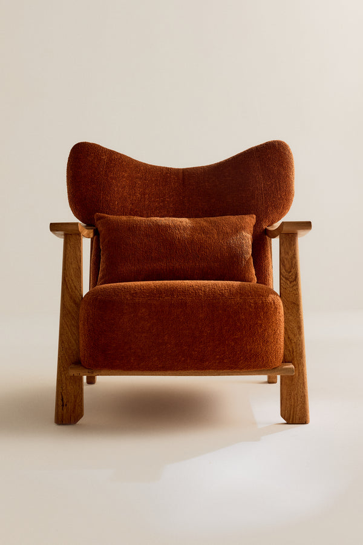
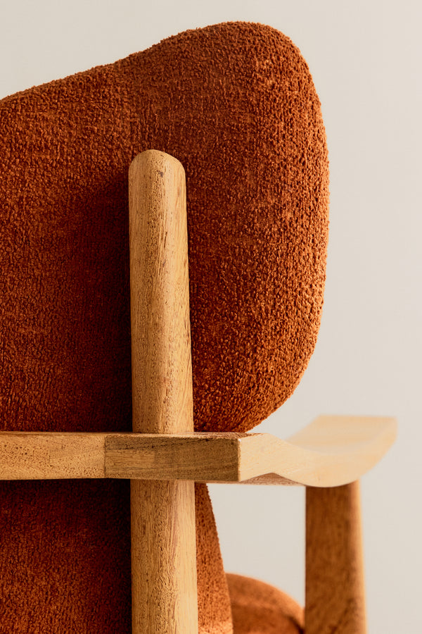
Nome à esquerda, preço à direita, em cinza. Passe o mouse: a frente dá lugar ao detalhe, no mesmo quadro. Fusão de 300 ms, sem escala (R-MOTION-03, proposta). Hoje o site troca em 200 ms e a segunda foto cresce de 80% a 100%. Ver os dois lado a lado.
Sem preço na grade. A legenda segue o guia: nome, depois as medidas, uma por linha. Tudo em preto, à esquerda (guia, p. 17). O preço fica na página da peça e na barra de compra. A etiqueta é preto sobre branco. Fica no fundo vazio da foto, longe da peça.
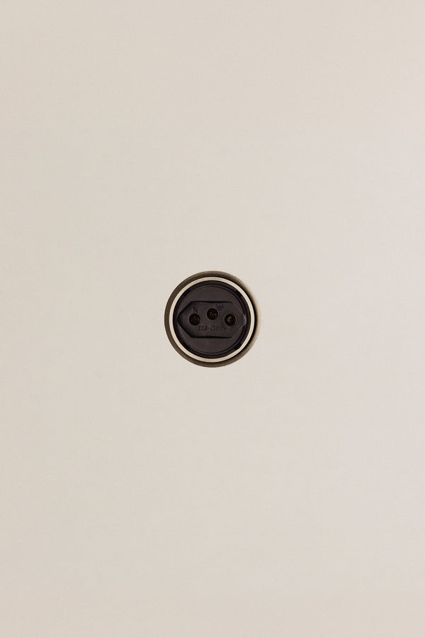
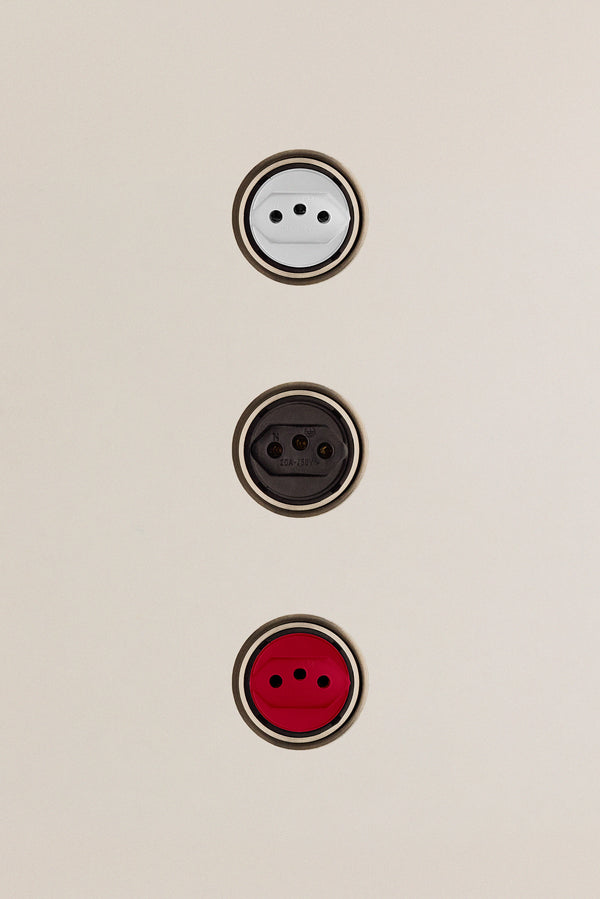
Pronta entregaA única etiqueta invertida, branco sobre preto, marca o que se leva já. Sem ciano: ele não está entre as nove cores do guia (guia, p. 14). Passe o mouse: aparecem as três cores de núcleo.
| Ponto | O que o guia diz | Hoje no site (medido em 15.10) | No card proposto |
|---|---|---|---|
| Fonte | guia Só a Muoto Regular, a única fonte que o guia nomeia (p. 17). | Nome e preço em Muoto. Botões entre colchetes e barras em Muoto Mono Condensed, a versão estreita e de largura fixa da mesma família. | proposta Nome e legenda em Muoto Regular. A etiqueta fica na Mono até a More decidir se a Mono é exceção ao guia. |
| Legenda | guia O exemplo de peça do guia é "Otoman Maria João", com "50 cm de largura" e "30 cm de altura" embaixo, uma medida por linha, sem preço (p. 17). | Nome e preço na mesma linha. As medidas já estão na grade, escondidas. Aparecem só na página da peça, como três números ligados pela letra x, sem unidade. | proposta Nome, medidas e opções, sem preço na grade. Medidas como 81 × 71 × 89 cm, sempre largura × profundidade × altura. O guia escreveria cada medida com o nome dela. Pergunta para a More: qual é a ordem? |
| Alinhamento | guia Um tipo de alinhamento por peça (p. 29, escrito para campanha). | Nome alinhado à esquerda, preço à direita. | proposta Tudo à esquerda. |
| Preto e cinza | guia Não usar preto com cinza no mesmo layout (p. 14). O cinza do guia é o preto a 89%, #434345. | Nome em preto quente #2D211E, preço em cinza #686868. | proposta Tudo no mesmo preto. Pergunta para a More: a regra vale para texto ou só para áreas de cor? |
| Cor da etiqueta | guia Só as nove cores da paleta (p. 14). Texto sobre cor sempre preto ou branco (p. 12). | O card não tem etiqueta. O ciano #8BC0D0 aparece só no filtro Fixos. | proposta Duas etiquetas: preto sobre branco para "Sob encomenda", branco sobre preto para "Pronta entrega". Sem ciano e sem vidro sobre a foto. |
| Lugar da etiqueta | guia Para o logo: não interromper o objeto da foto nem cobrir a área que explica o produto (p. 30 e 31). | Não se aplica. | proposta A mesma regra vale para a etiqueta: no canto, no fundo vazio da foto, nunca sobre a peça. É a regra do logo, levada para a etiqueta. |
| Fotos do card | guia Still com luz difusa e sombra levemente marcada, em seis ângulos: frente, 3/4 frente, lado, costas, 3/4 costas e detalhe, com cuidado com textura e cor dos materiais (p. 23). Sem pessoas, sem luz com desenho de janela, sem luz chapada (p. 24). | O card abre na foto de frente; a segunda foto da Leticia é o detalhe. Fotos de 2:3 recortadas em 3:4. | proposta Frente no card, detalhe no hover, porque o guia põe a textura em primeiro lugar. Peça com variações (a tomada) mostra as variações no hover. |
| Movimento | O guia não fala de movimento. | Corte seco de 200 ms, segunda foto crescendo de 80% a 100%. | proposta Fusão de 300 ms, sem escala. |
| Números | O guia mostra os algarismos da Muoto, sem regra de uso (p. 17 e 18). | Algarismos de largura variável. Medidas ligadas pela letra x, sem unidade. | proposta Algarismos de largura fixa, para preços e medidas alinharem em coluna, e o sinal × de verdade nas medidas. As duas coisas são recursos da própria Muoto. |
| Etiqueta impressa na loja | guia Logo com no mínimo 18 mm no papel e 120 px na tela (p. 5). Em campanha, texto corrido até 12 pt e título até 20 pt (p. 29 e 31). | As etiquetas da abertura de 05.11: na ficha A6 o logo tem 18 mm e o nome 30 pt; na etiqueta de pendurar 50 × 90 mm o logo tem 14 mm e o nome 15 pt. As duas usam o desenho antigo do logo. | proposta Logo de 18 mm também na etiqueta de pendurar, com o desenho oficial, e as mesmas duas etiquetas de status do card. Pergunta para a More: os limites de 12 e 20 pt valem para etiqueta ou só para campanha? |
Seletores de material e acordeão
Selecione a Madeira
Selecione Cor
Detalhes
Descrição
Baixar
No site, os seletores são fotos recortadas do material real: bloco de madeira, tecido. Aqui viraram cor chapada, só para ilustrar. Bolinha redonda só na tomada.
Movimento
Uma coisa muda por vez, devagar e curto. Fusão de 0,3 a 0,8 s. Nada escala, nada salta. Passe o mouse ou toque no bloco abaixo.
Medido no site em 15.10.2026
| Onde | O que muda | Duração | Curva |
|---|---|---|---|
| Abertura | letras saem; body 0 → 1; catálogo sobe 24px | 600 · 700 · 450ms | ease · ease · out-expo |
| Card, hover | foto 1 a 60%; foto 2 a 75% do quadro, escala .8 → 1; "Pronta entrega" aparece | 200ms | snap |
| Filtro | cor do link | 150ms | ease |
| Menu | barra cresce em largura e altura, fundo escurece; conteúdo aparece | 500 · 300ms | ease |
| Menu, hover na peça | foto da peça troca por opacidade (JS) | 0 | - |
| Carrinho | gaveta em altura; botão adicionar em largura e fundo | 500 · 1000ms | ease |
| PDP | miniaturas 0 → 1; acordeão (borda); materiais (altura); contador do carrinho | 700 · 300 · 1000 · 140ms | ease |
| Sobre | overlay 0 → 1; vídeo escala e desfoca | 800 · 700ms | ease · ease-out |
Referências, medidas no mesmo dia
Referência serve para medir. Nunca para copiar.
| Loja | Hover do card | Duração | Curva |
|---|---|---|---|
| The Row | fusão para a foto no corpo, quadro inteiro, só opacity | 300ms | ease |
| Jacquemus | fusão entre fotos do tile, só opacity; painéis em 800ms | 300ms | ease |
| Knoll | fusão para foto em ambiente com escala .95 → 1 | 600ms | .215,.61,.355,1 |
| Norr11 | a foto não troca; o nome aparece. Foto carrega em 1,2s | 200ms | ease |
| Kann · Massproductions · Vipp | fusão no quadro inteiro, só opacity | 250 · 400 · 300ms | ease |
A segunda foto do card (R-MOTION-03)
O quadro de hoje fica: foto 2 a 75%, foto 1 a 60%. Só a opacidade muda: 300 ms, ease. Nada escala. Nome e preço ficam parados. Ver hoje e a proposta lado a lado.
Interação (R-MOTION-04)
Sem sequestro de rolagem, loader teatral, cursor próprio ou carrossel automático. O que o hover mostra, o foco também mostra. No toque não existe hover.
Em vídeo (R-MOTION-02)
Troca de foto sem fade, na ordem dos carrosséis: peça inteira, detalhe, material.
A sombra dura da janela atravessa a peça. Está no vídeo do convite de 05.11.
Fotografia
Estúdio: fundo bege contínuo. Uma luz dura de lado desenha uma janela no chão e na parede. Peça em 3/4, câmera um pouco acima do assento. A câmera faz 2:3. 3:4 (site), 4:5 e 9:16 são recortes. O detalhe vem ao lado da peça inteira: encaixe, trama, borda do vidro.
Low-key (Instagram): fundo quase preto, uma luz quente rasante, close de material. A peça nunca é alterada por IA.
O tempo fica: pátina, mancha de uso e madeira escurecida aparecem como estão. Nada se retoca. Quem fez: a foto de detalhe mostra o encaixe, a legenda diz o ofício.
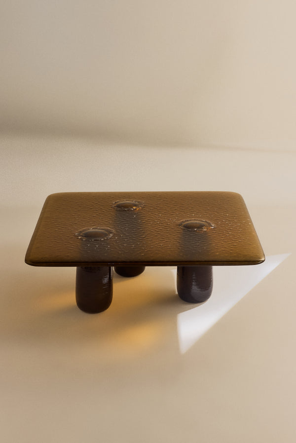
Campo de cor (Instagram): uma cor chapada atrás de uma peça, luz baixa. Até 1 a cada 9 posts. Bastidores: gente e equipe no set, no feed, no story e no livro. Nunca na página da peça nem no Sobre.
Corte: nunca corte a peça. Se o recorte 4:5 ou 9:16 corta a peça, desloque o recorte. Se ainda corta, use outra foto. Peça inteira com pelo menos 15% de ar acima, no terço de baixo, sombra inteira. Detalhe sangra em pelo menos dois lados. Nunca recorte a peça sobre o off-white: o fundo é a página.
O guia de uso descreve outra luz (p. 20 a 24): quatro tempos na campanha, luz difusa, sombra leve. Sem sombra de janela, sem low-key. Esta seção mostra o que o site e o Instagram publicam. A troca é pergunta para a More. A luz da hora, em Propostas, pode resolver as duas.
Fora da tela
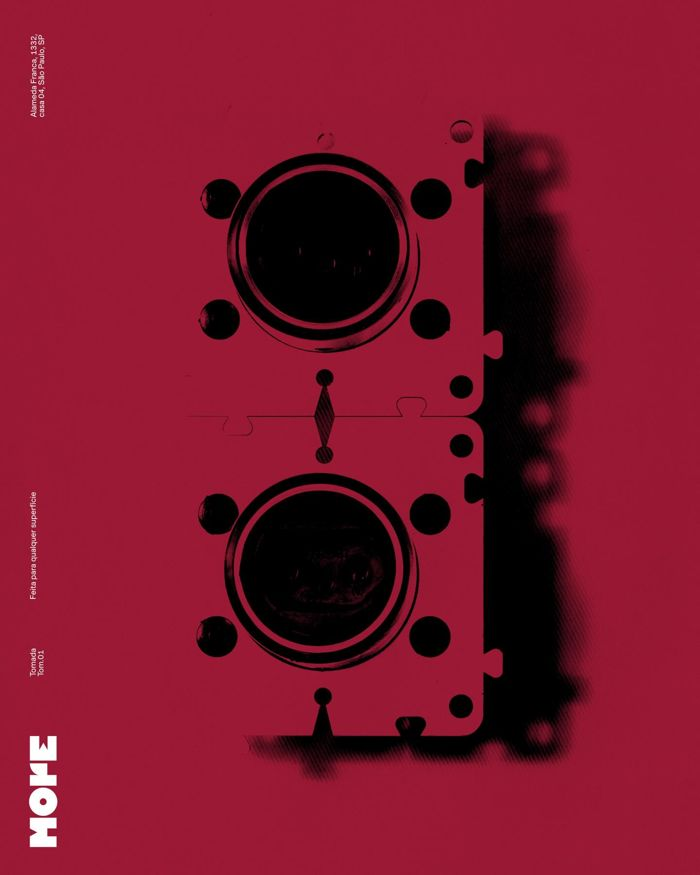
Receita do cartaz
O cartaz vermelho da TOM.01 é a única peça gráfica da More no Instagram. O que ele faz:
- Um campo de cor chapado (vermelho-jambo), sem degradê.
- A peça em preto, como silhueta dura, com a sombra borrada de lado.
- Três blocos de texto pequenos em Muoto, girados 90°, na margem esquerda: nome da peça, uma frase, endereço.
- A marca em M (16% do lado curto), girada 90°, no canto de baixo à esquerda, em branco.
- Nada mais: sem preço, sem chamada, sem moldura.
Exportação por canal
| Canal | Formato | Observação |
|---|---|---|
| Instagram feed | 4:5 · 1080×1350 JPG | Recorte do topo da foto 3:4. |
| Stories e reels | 9:16 · 1080×1920 | 250 px livres em cima e embaixo. |
| Shopify | 3:4 · 2000×2667 JPG q80 sRGB | Uma peça por imagem. |
| 600 px de largura | 3:4 ou 3:2. | |
| 1080 px no lado maior, JPG | Link em texto junto, nunca só na imagem. | |
| Impressão | 300 dpi · PDF/X-4 | Sangria de 3 mm, segurança de 5 mm, perfil para papel sem revestimento. |
Regras
Cada regra tem uma checagem automática que diz passa ou não passa. Ou um par de fotos: assim sim, assim não. A peça passa por todas antes de sair. O site de hoje também passa por elas, e já quebra algumas.
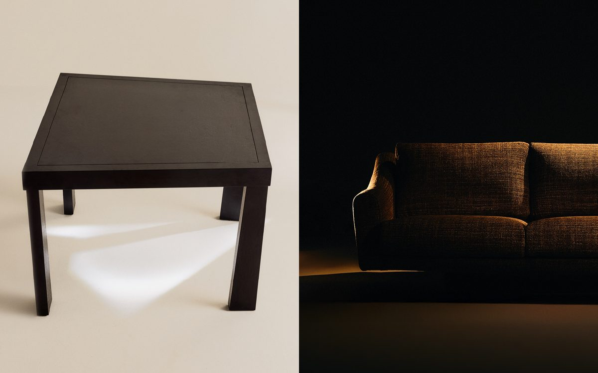
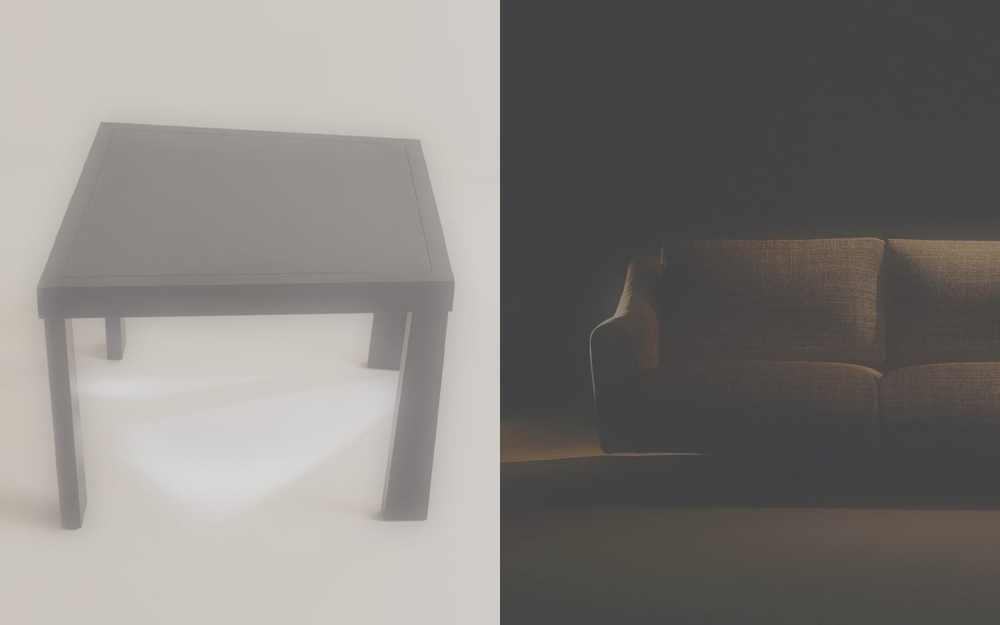
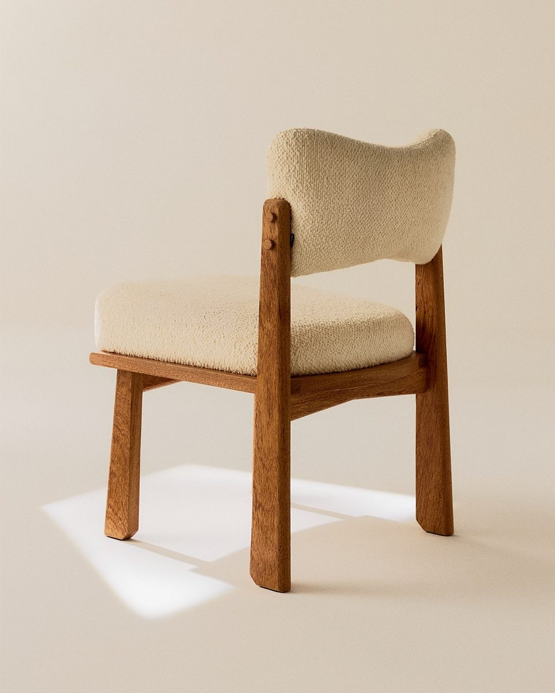
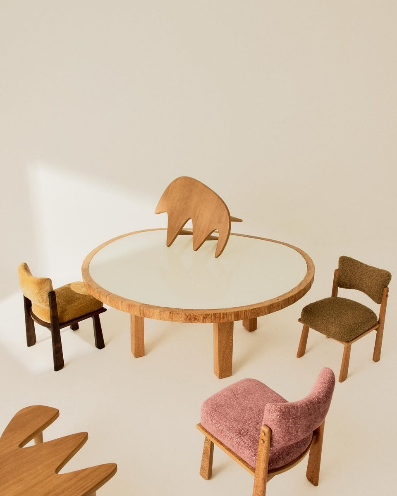
Toda cor vem de um token aprovado. Branco opaco só em texto sobre fundo escuro. Nunca como fundo.
checagem automática
O fundo é off-white #E5E1DB. O texto é preto #2D211E. Nunca #000, nunca fundo branco. Hoje o site erra: o texto corrido sai #000. No impresso, o off-white é o papel e não leva tinta.
checagem automática
Ciano #8BC0D0 é a única cor da interface. Só no hover ou na aba ativa da navegação, como no filtro Fixos. Nunca como texto sobre off-white: o contraste é 1,53:1. Nunca como enfeite. No impresso, só no adesivo quadrado de 10 mm de pronta entrega.
checagem automática
Estrutura tem canto vivo. Raio só de 0, 2, 8 ou 10 px, ou círculo. O site tem três fora da escala. 5 px no modal, 6 px no vídeo do Sobre. 20 px no rótulo do modal.
checagem automática
Só Muoto e Muoto Mono, peso 400. O site pede 300 e mostra 400. Peso 600 só no filtro ativo. 700 nunca.
checagem automática
Toda ação de texto leva uma palavra entre colchetes: [Conversar], [Voltar], Menu [+]. Status e lugar nunca levam: Pronta entrega, Jardins. Hoje falham no site: Checkout, Adicionar, Baixar, Cadastrar, Todos, Categorias. Peça impressa não tem ação. Então não tem colchete.
checagem automática
Menu, carrinho e compra ficam em barras flutuantes no pé da tela. Centralizadas, 35 px de altura, fundo de vidro. Nenhum cabeçalho fixo no topo. Exceções do site: o filtro da coleção e o botão de voltar.
checagem automática
Uma peça por foto de produto. A câmera faz 2:3. Os recortes são 3:4 no site, 4:5 no feed e 9:16 no story. 3:2 só na lista. O story guarda 250 px livres em cima e embaixo.
checagem automática
Foto de peça é fotografia. Nunca gerada nem alterada por IA. Troca de acabamento só com foto real. Quem exporta mantém os dados de origem do arquivo.
checagem automática
Estúdio: fundo bege contínuo e uma luz dura de lado, com sombra de janela nítida. Low-key: fundo quase preto e uma luz quente rasante. Luz difusa e sombra mole não passam. As fotos já publicadas da More são a referência.
par de fotos sim e não, acima
A marca é sempre o desenho oficial do brand book. Desenho de Manoela Moura e Anna's, 2025. A cor vem da página. Nunca MORE digitado como texto. Em imagem, a marca entra depois, por cima. Nunca é pedida a uma IA.
checagem automática
Doze palavras de vitrine ficam fora do texto. A lista está na regra. Sem exclamação, emoji ou hashtag. Frase com até 16 palavras. O texto prova com fato, não com adjetivo.
checagem automática
Toda página de peça mostra um só rótulo. Pronta entrega, sem prazo. Ou Sob encomenda, com prazo: Sob encomenda · ~120 dias.
checagem automática
O card da grade não mostra preço. O preço fica na página da peça. Veio da conversa de 15.10 e ainda espera a decisão da More.
checagem automática
Duração só de 80, 140, 200, 300, 450, 500, 700, 800 ou 1000 ms. O site usa 150, 180, 280, 400 e 600 ms: falham. Curva ease, ease-out ou ease-in-out. Todo movimento tem uma versão parada para quem pede menos movimento.
checagem automática
Legenda de peça: nome, ponto, uma linha seca de 3 a 12 palavras. Depois o material, se precisar. Legenda de fato: o quê, quando e onde. Depois no máximo uma linha seca. No tom destas: Não é quadrada, só parece. Nada grita, só a concorrência.
checagem automática
Português primeiro. Texto em inglês só como segunda versão, marcada. O texto em inglês do Sobre quebra isto hoje.
checagem automática
Os campos de cor são fundo de cartaz, convite, livro, vitrine e post. Um campo por quadro, chapado. Nunca na interface da loja. Petróleo ainda é só proposta.
checagem automática
Marca em M ou XL. M tem 1/6 do lado curto do quadro. XL ocupa a largura, encostada embaixo. Vai em evento, cartaz, convite, vitrine e livro. Não vai em post de peça nem em story. Preto, branco ou off-white.
checagem automática
Toda área com rolagem termina com 106 px livres embaixo. Assim a barra nunca cobre conteúdo no celular.
checagem automática
Um nome por peça, igual em todo lugar. Tipo em minúscula, depois o nome: Mesa de centro Cildo, Cadeira 556-A. Ngoni, Leticia, Naz, INT.01, Maestro e Dominó esperam a decisão da More.
checagem automática
Vídeo troca de foto em corte seco, sem fusão. A luz se move como no convite de 05.11. A sombra da janela atravessa a peça, com a câmera parada.
checagem automática
A segunda foto do card entra por fusão de 300 ms. Só a opacidade muda. Nada escala, nome e preço ficam. Hoje o site escala de 80% a 100% em 200 ms: falha.
checagem automática
A interação orienta, não encena. Sem sequestro de rolagem, loader teatral, cursor próprio ou carrossel automático. O que o hover mostra, o foco também mostra.
checagem automática
Pátina, mancha de uso e madeira escurecida não se retocam. Nem na foto, nem na peça. Toda ficha de madeira tem uma linha sobre como ela envelhece.
par de fotos sim e não, a fazer
Ritmo: peça inteira, detalhe, vazio. Depois de dois blocos densos, um respiro de off-white e uma linha. Altura proposta: space.vazio, 240 px no desktop e 120 px no celular.
checagem automática, a escrever
Toda peça mostra um detalhe de execução: encaixe, quina ou solda. A ficha diz quem fez. Pelo ofício, até a More confirmar os nomes.
checagem automática, a escrever
A primeira mensagem pergunta pela sala, pela luz e por quem mora. Nunca pelo preço. A ação principal é [Conversar]. Nunca Pedir orçamento, nunca Fale conosco.
checagem automática, a escrever
Referência vira memória, nunca cópia. Nenhuma peça nova recria uma imagem de referência. Antes de criar, leia o repertório e o que a More não é.
revisão lado a lado com as referências
Fatos
Só isto pode aparecer como fato. O resto fica fora da peça até a More confirmar. A lista está em Próximos passos.
| Fato | Valor | Fonte |
|---|---|---|
| Loja | Alameda Franca 1332, casa 04 · Jardins · São Paulo | cartaz TOM.01 e rodapé do site |
| Abertura da loja | 05.11 (2026). Sem horário. | convite atual |
| Nome do lugar | "loja" para o endereço físico | texto Sobre do site |
| Pronta entrega | Tomada TOM.01 (miolo preto, vermelho ou branco). Sem prazo no texto. | site |
| Sob encomenda | todas as outras peças: "Sob encomenda · ~120 dias" | conversa de 15.10 |
| Preços | só os do site no dia; TOM.01 e Estante Dominó estão com R$ 1 provisório e não entram em peça | site |
| Medidas e materiais | só os da página da peça no site | site |
| Como a More se apresenta | "Estúdio e loja de móveis em São Paulo." | texto Sobre do site, traduzido e com "loja" |
| Quem fez | pelo ofício: a marcenaria, a serralharia. Nomes só quando a More confirmar. | posts do Fred e do ateliê |
| Medidas | 81 × 71 × 89 cm: largura × profundidade × altura, com o sinal × | página da peça no site |
| Instagram e site | @more.mymore · mymore.design | site |
Receitas por canal
O que fazer em cada formato. A coluna da direita diz de onde vem. Padrão provisório é uma decisão tomada para não deixar dúvida. Espera a More aprovar.
| Canal | Receita | Origem |
|---|---|---|
| Post de peça 4:5 | Só a foto, 1080×1350. Sem texto, sem marca na imagem. Texto vai na legenda (fórmula R-COPY-02). Foto quadrada: recorte no centro; foto 3:4: recorte do topo. | observado (76% do feed) |
| Post de evento 4:5 | Campo de cor + data em display + marca XL embaixo + endereço em Muoto girado. Legenda começa pelo fato (o quê, quando, onde). | convite 05.11 |
| Story 9:16 | Foto 9:16 recortada no centro. Texto só no terço de cima, abaixo dos 250 px livres, em Muoto 44 px (statement ×1,7) e mono 26 px. Sem colchetes: link vai no adesivo de link. Marca: não leva. | padrão provisório |
| Texto sobre foto | Preto #2D211E sobre área clara, branco sobre área escura. Nunca sobre a peça, só no fundo liso. | padrão provisório |
| Cartaz de peça | Receita do cartaz (acima), só em vermelho-jambo ou amarelo-igaratá: nos campos escuros a silhueta preta some. Silhueta feita da foto real por limiar, sem IA. | cartaz TOM.01 |
| Cartaz de evento | Sem peça: campo, data em display-1, marca XL embaixo (pode passar a margem do grid), três blocos girados com o endereço. | convite 05.11 |
| Blocos girados | Muoto 1,2% da largura do quadro (A2: 14 pt; 1080 px: 13 px). | medido no cartaz TOM.01 |
| Etiqueta | Nome em Muoto, status em mono sem colchetes, medidas e madeira do site, mymore.design. Sem preço. Furo de 5 mm no canto de cima à esquerda, a 8 mm das bordas. | padrão provisório |
| Primeira mensagem | WhatsApp e [Conversar]: pergunta pela sala, pela luz e por quem mora. Nunca pelo preço. "Para qual sala é? Conte da luz que ela tem." | ideia do Fred · R-COPY-04 |
| Página nova | Componentes desta página. Barra de baixo com uma ação em colchetes; página de evento usa [Como chegar] com link do Google Maps para o endereço. | site + padrão provisório |
Teste com quem não viu a criação
Duas sessões de IA fizeram 10 peças cada, só com este sistema. Nunca tinham visto a criação. Feed, story, etiqueta, cartaz A2 e página. Cada vez que o sistema não dizia algo, elas anotaram. Depois de cada rodada, o sistema foi corrigido. As peças, não.
| Rodada | Dúvidas anotadas | Contradições internas | Falta de regra | Falta de fato | Regras que reprovam as peças |
|---|---|---|---|---|---|
| 1 | 100 | 11 | 76 | 13 | 7 de 23 |
| 2 | 91 | 22 | 52 | 17 | 2 de 24; 0 depois de corrigir as duas contradições |
A rodada 1 foi classificada depois, pelos rótulos do diário. A rodada 2, pela própria sessão. Por isso as contradições não se comparam direto. A rodada 2 também achou contradições novas, das receitas e fatos que entraram no meio. O que sobra é quase todo fato que só a More tem. Fotos originais em alta, ficha de cada peça, texto Sobre em português, detalhes da abertura.
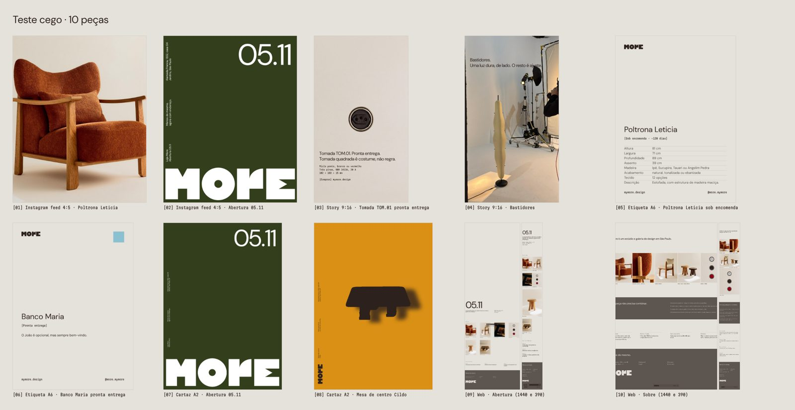
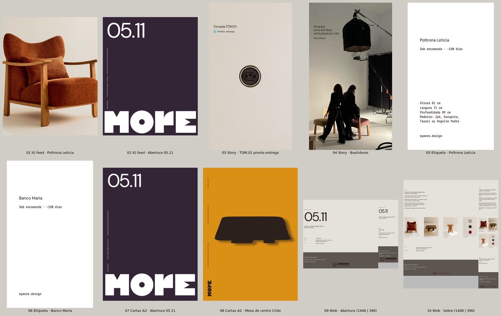
Propostas
Nada aqui tem uso da marca que confirme. Não vale como regra. Quando a More aceitar, sobe para o corpo do guia.
As amostras fotografadas lado a lado, como as pranchas da Knoll. O site não tem tato. Mas pode dizer a temperatura.
quente ou frio · áspero ou liso · leve ou pesado · como envelhece
Para foto ambientada, vitrine e a loja de 05.11. Cada ambiente leva seis coisas:
- uma peça escultórica
- uma peça funcional
- uma textura feita à mão
- uma planta
- uma obra de arte
- um achado com pátina
A mesma peça, a mesma câmera, três horas do dia. Manhã, meio da tarde, fim de tarde. A sombra da janela deixa de ser estilo. Vira hora.
Outras propostas
Espaço livre em volta igual à altura do O.
As letras M-O-R-E entram em sequência, 120 ms entre elas, do cinza ao preto.
#306C6A. Não existe acabamento com esse nome. A amostra é luz colorida na borda de uma mesa.
Todo arquivo diz a marca, o canal, a peça, a variante, a data e a versão. O exemplo está no fim desta seção.
checagem automática
PDF de impressão com 3 mm de sangria e o formato final marcado. Off-white é o papel, não tinta. Imagem a 300 dpi. A gráfica faz a exportação final.
checagem automática
Recusada: o convite de 05.11 da própria More usa uma elipse. Só volta se o time decidir proibir.
Para imprimir (proposta, a validar com a gráfica)
| Token | Tela | CMYK | Pantone | Uso |
|---|---|---|---|---|
| off-white | #E5E1DB | é o papel | — | Papel natural sem revestimento, 90–150 g (Munken Pure, Pólen). Nunca imprimir como chapado. |
| preto | #2D211E | C60 M70 Y70 K80 | Black 5 C | Texto e logo. Áreas grandes em preto rico C60 M40 Y40 K100. |
| cinza-escuro | #5D554F | C0 M12 Y20 K75 | 411 C | Texto pequeno. |
| cinza-medio | #686868 | K70 | Cool Gray 9 C | Rótulos curtos. |
| ciano-destaque | #8BC0D0 | C40 M5 Y10 K0 | 7458 C | Só "pronta entrega": adesivo quadrado de 10 mm. |
Escala display · só impresso e telas grandes
display-1 240 pt · display-2 96 pt · display-3 48 pt. Entrelinha 0,9, espaçamento −0,02em, Muoto 400. Nunca dentro da loja.
Escala de impressão (pt)
Legenda 6 · rótulo 7 · texto 8,5 · interface 10 · título 14 · frase 20 · sobre 28. O rótulo 7 é o mínimo do mono em papel sem revestimento. Para usar no InDesign, falta confirmar a licença desktop da 205TF. A licença web não cobre impresso.
Grid de impressão
12 colunas. Margem de 1/24 do lado curto. Linha de base de 12 pt. Imagens em módulos 3:4 ou 3:2. Marca XL na margem de baixo. O vidro das barras não existe no papel: vira preto a 10%, sem desfoque.
Peças da loja
Etiqueta: cartão sem revestimento de 50 × 90 mm, em pé. Nome em Muoto. Uma linha em mono, sem colchetes: Sob encomenda · ~120 dias ou Pronta entrega. Caixa da TOM.01: preto rico, marca vazada, painel técnico em mono. Vitrine: uma peça, luz dura de lado.
Nome dos arquivos (R-FILE-01)
Marca, canal, peça, variante, data e versão:
MORE_IG_mesa-de-centro-cildo_4x5_20261105_v02.jpg
Como usar com o Claude
- Abra o Claude com acesso aos arquivos do sistema.
- Peça em português, como pediria a alguém do time: “Siga o sistema de design da More e revise antes de me mostrar.”
- Quem cria não aprova o próprio trabalho. Peça sempre uma segunda revisão, de outra pessoa ou de outro agente.
- Toda correção do time (“isso não é More”) vira regra nova. É assim que o gosto acumula.
Repertório e o que a More não é
Antes de criar, a IA lê duas listas. Referência vira memória, nunca cópia. Nenhuma peça nova recria uma imagem de referência.
Brancusi, Arp, Perriand, Lina Bo Bardi, Rino Levi com Burle Marx, Aalto. Agnes Martin, Suzan Frecon, Turrell, Serra, Eliasson, Lorenzato, Ronchamp. De cada nome, uma lição. Brancusi: reduzir a forma. Turrell: a luz como material.
Render decorado. Moodboard bege genérico. Ambiente gerado por IA. Móvel que só combina.
[+] Para quem é técnico
Os arquivos guardam os tokens, as regras e as checagens. A IA lê tudo antes de criar e confere tudo antes de entregar. Quem cria e quem revisa são agentes diferentes. Ver os arquivos.
Próximos passos
Quando chegar o acesso
- Shopify: comparar o tema com o sistema e aplicar as correções. A primeira é uma linha: o texto corrido passa a sair no preto da More.
- Fontes: chegaram em 15.10, Regular e Italic das duas famílias. Falta a More confirmar com a 205TF a licença web e o número de computadores. Ver a licença em uma página.
- Fotos originais: chegaram em 15.10. O amarelo já foi medido no original. Vermelho, verde e berinjela não têm original. A paleta do guia é proposta.
- Figma da agência: comparar com o sistema e manter um só.
- Gráfica: papel, perfil de cor e prova das cores impressas.
- Fotos novas: a prancha de materiais, a receita de ambiente e a luz da hora.
Com o time
- Uma conversa para passar regra por regra: aceita, muda ou recusa.
- Vitor faz 3 peças sozinho, só com este guia, e anota onde travou. Cada trava vira correção no sistema.
- Dizer quem fez cada peça: marcenaria, serralharia, fotógrafo. Com nome, se a More quiser.
- Decidir as grafias e nomes das peças (lista em Voz), o texto Sobre em português e os preços de R$ 1 na TOM.01 e na Estante Dominó.
- Ficha de cada peça (medidas, madeiras, tecidos, prazo, status) e a foto-mestra 3:4 em alta, para impresso a 300 dpi.
- O que acontece na abertura de 05.11: horário, convite aberto ou fechado.